一、团队介绍
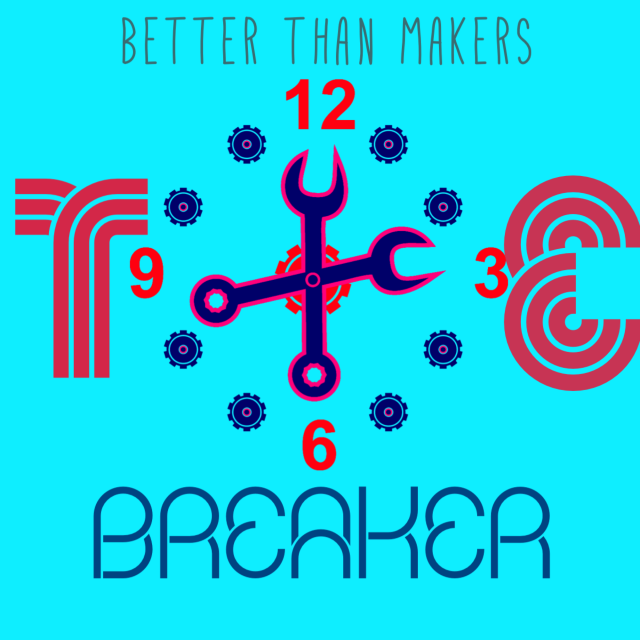 团队Logo的设计理念：Logo主体为TIE-Breaker。单词的本意是打破平局，抢七决胜，代表我们团队敢于挑战，冲出逆境的霸气。赋予TIE以Things of Internet Electrionic的新含义，代表了团队特有的造物主体：物联网电子。
字母I旁边的齿轮，代表了创客成员之间如齿轮般互相合作的默契。Logo正中的时钟，暗示48小时的极限造物。
二、学习进度
 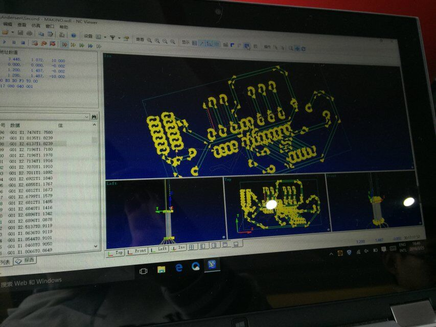
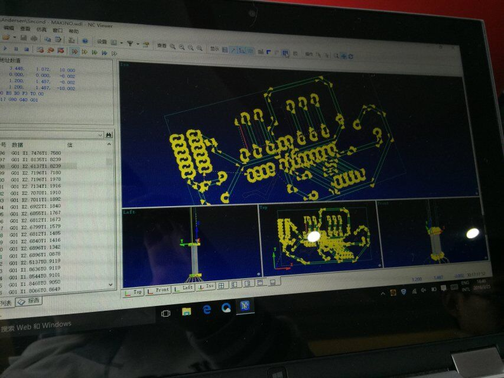
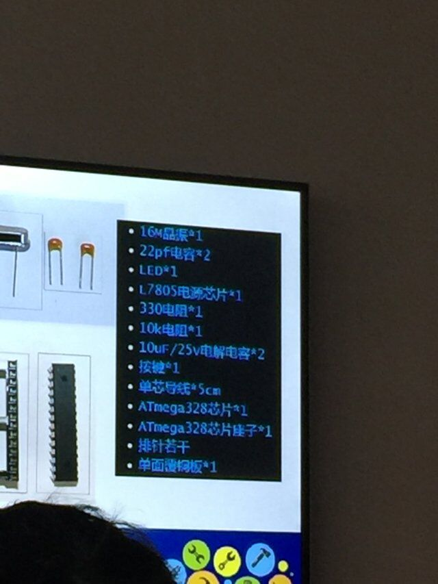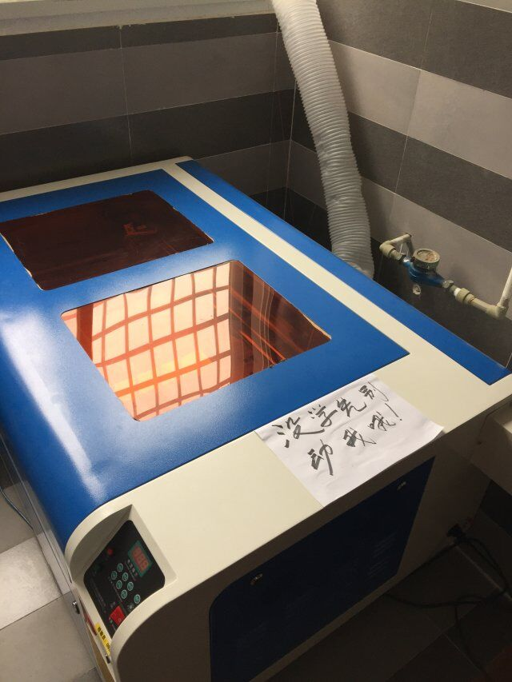
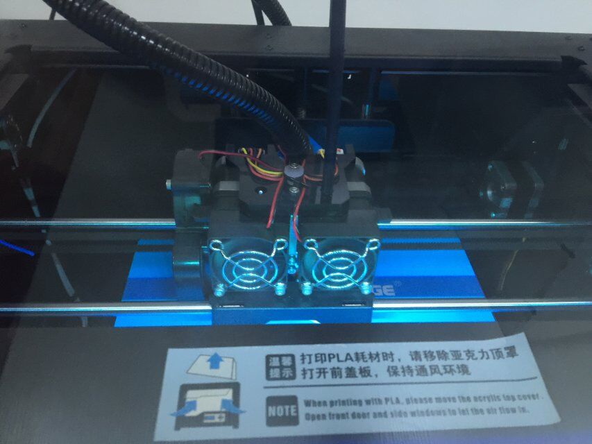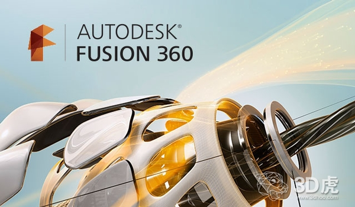
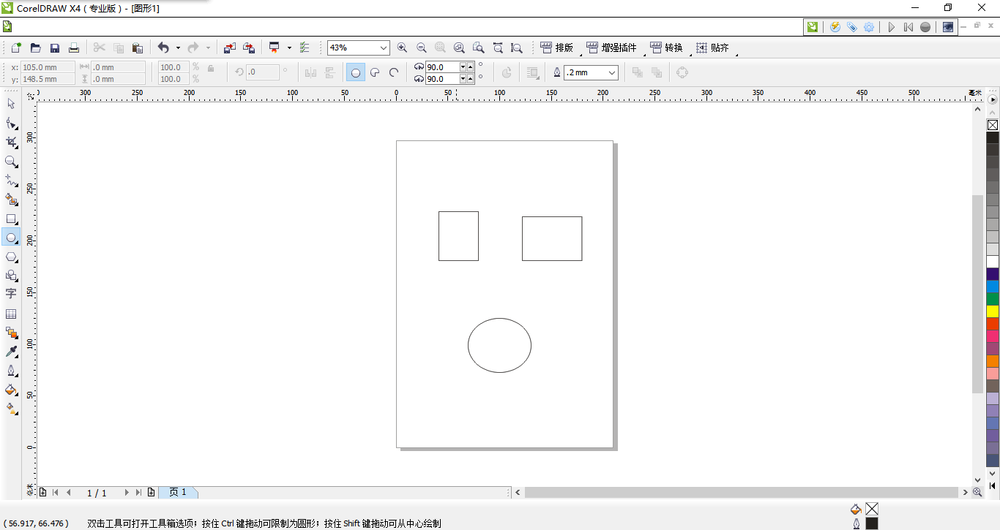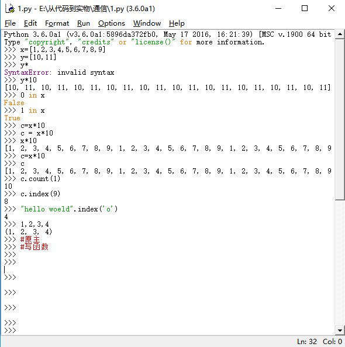
三、最终作品
•想法的产生
在夏日炎炎的时候，我们有时会感到风扇的风力似乎总是不称心如意，因此不停地起身调节风扇的档位。久而久之，不免感到厌烦。我们团队从这一处不方便中看到了灵感， 认为可以做一款根据人体体征来自动调节风速的体感智能风扇。随后，我们在Arduino这个开源平台上看到了方案的可行性。于是，造物开始！
•造物过程
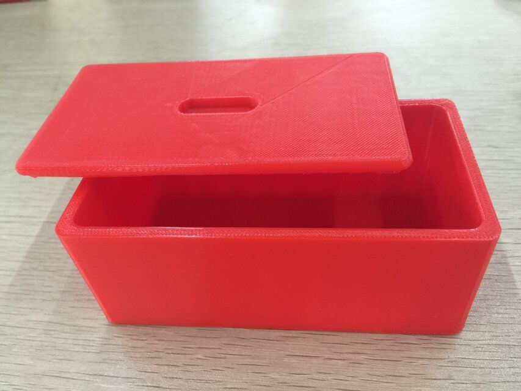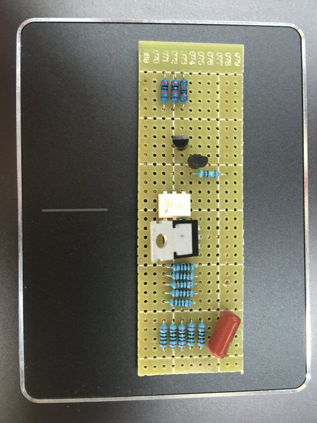
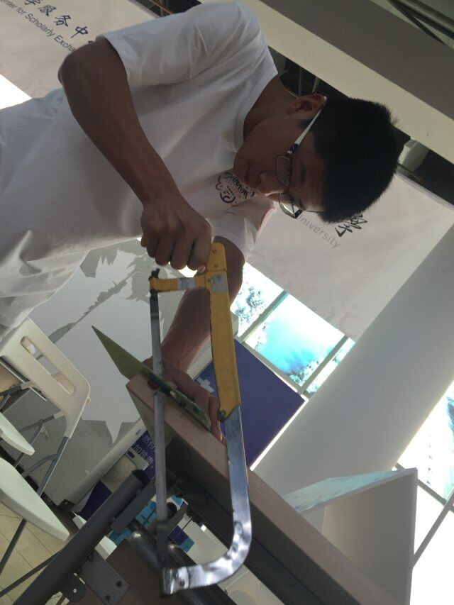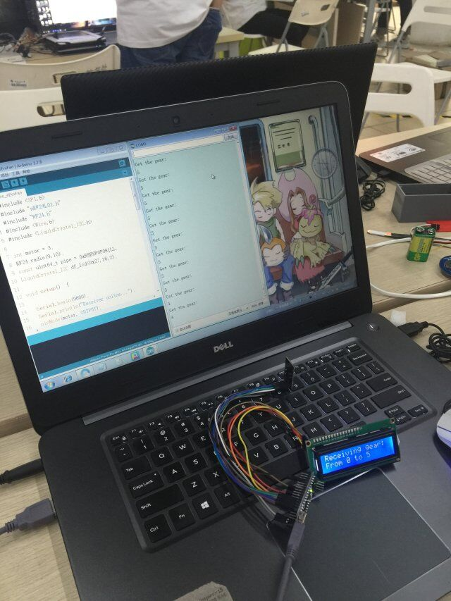
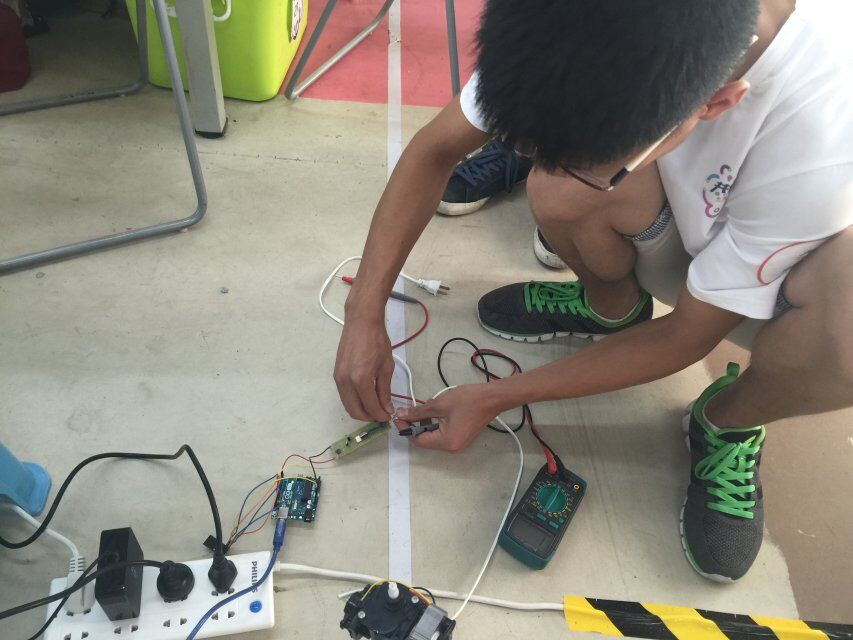
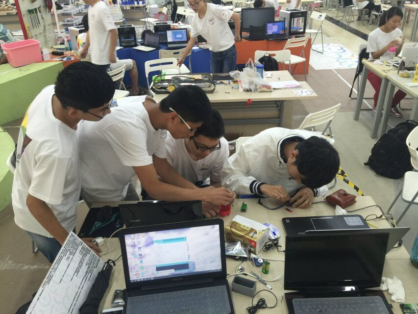
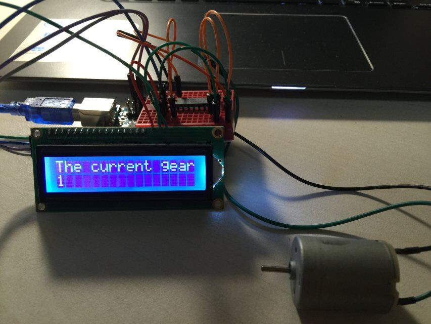
•成品展示
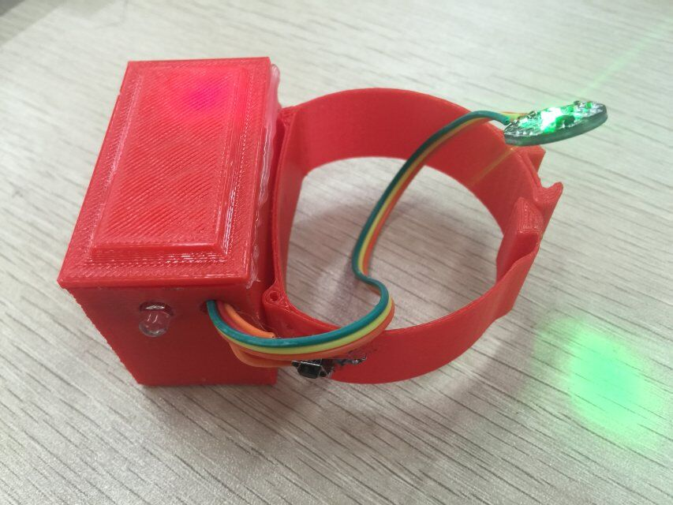
四、关注我们
扫描下方的微信二维码来关注我们的微信公众号。
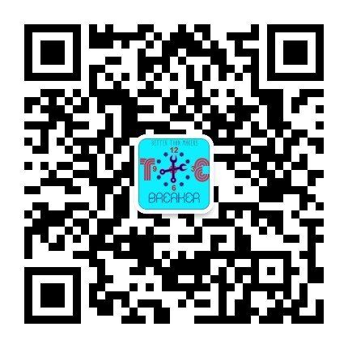